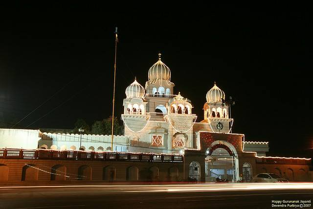
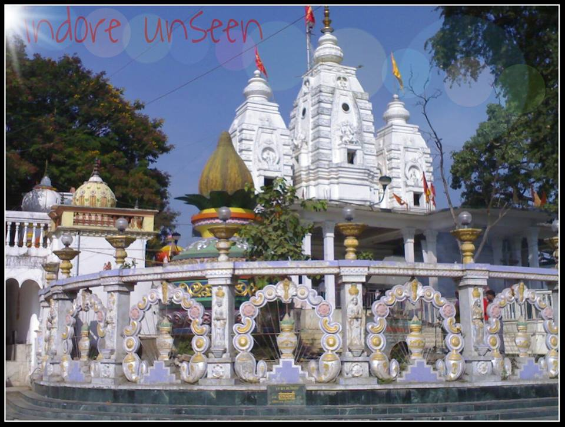
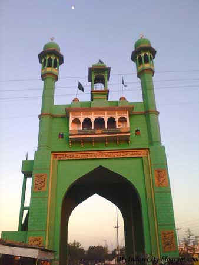
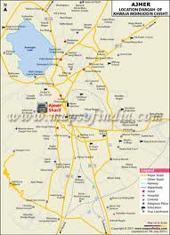
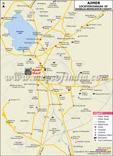
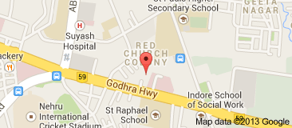
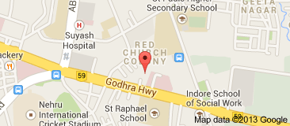
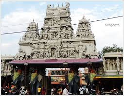

L.I.G Gurudwara
 Indore is historically attached to Sikhism. It has numerous Gurudwaras. Gurdwara Imli Sahib is Sikh shrine situated in Indore. In the year, 1567 Guru Nanak Dev Ji in the way of his itinerary diverted from southern states to the north-west and reached Indore. It is centrally located and innumerable devotees assure spiritual knowledge, peace and bliss here.
Gurdwara Charan Paduka Betma Sahib is situated in the small village of Betma. Betma is a town and a nagar panchayat in Indore district in the state of Madhya Pradesh, India. Betma Sahib is one of the pious gurudwaras of historical significance for Sikhs, as it is believed that Guru Nanak Dev Ji visited this place during his southern Udasi.

Khajrana Temple
Citizens of Indore city and other nearby cities have great faith in the Khajrana Temple. This temple is made by Ahilyabai Holkar, the brave Maratha queen. This is an important place of Hindus.

Nahar Shah Wali Dargah
 "HAZRAT SAYYED GHAZI NOORUDDIN IRAQI" he aur aapka Laqab "NAHAR SHAH WALI HE." Aapka laqab NAHAR SHAH isliye he kyunki aapke sath humesha ek sher (Lion) rehta tha jo aapke baithne ki jagah ko apni poonch se saaf kiya karta tha aur aapke inteqaal ke baad musalsal kai saal tak woh aapke mazaar-e-mubarak par aakar aapki chokhat ko apni poonch (Tell) se saaf kiya karta tha isi liye Hazrat ko Nahar Shah Wali Kaha Jata he.


Red Church
 Red Church - A Religious/Spiritual Center in National Highway 59, Indore, Madhya Pradesh, India, Indore.

Red Church - A Religious/Spiritual Center in National Highway 59, Indore, Madhya Pradesh, India, Indore.

Annapurna Mandir
Annapurna is a very beautiful and one of the oldest temples in Indore. Dedicated to the goddess Annapoorna, this temple is one among the famous pilgrimage centres in Indore. Not only devotees, but also tourists come to see this majestic shrine. This temple bears a resemblance to the famous Madurai Meenakshi Temple of Madurai. Inside the temple premises there exist shrines of Sivan, Hanuman, and Kalabhairava. The Pravachan Hall of the temple is also very famous.